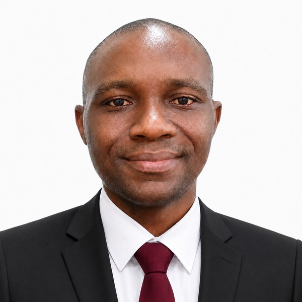
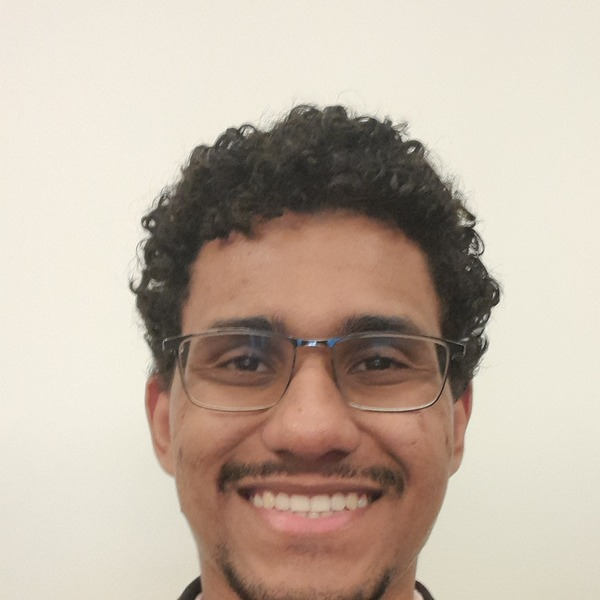
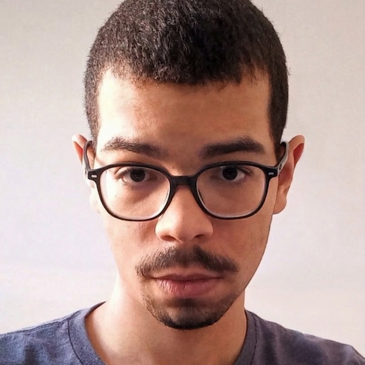
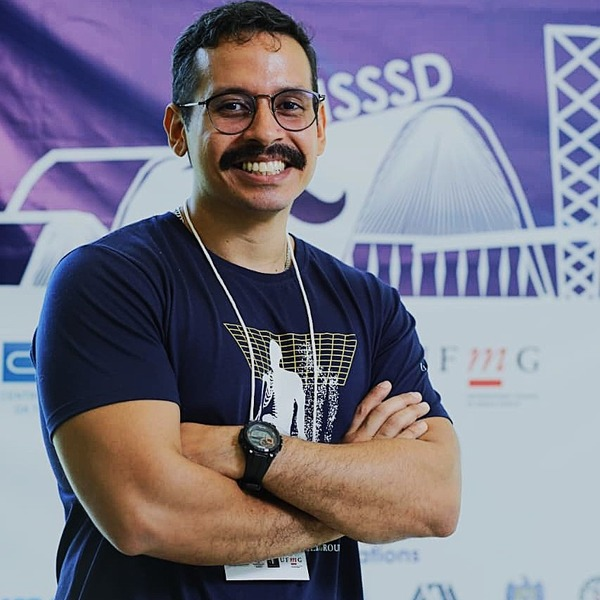
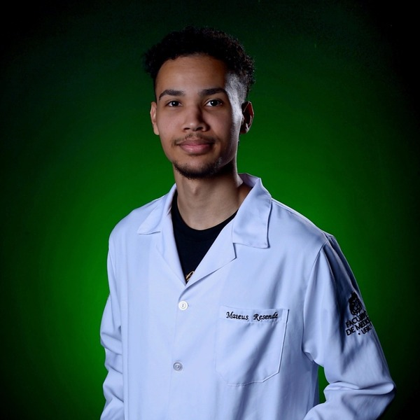

Meet the postdoctoral researchers, graduate, and undergraduate students carrying out research within
MCMEG, working on Monte Carlo modelling and simulation applied to radiation protection and dosimetry.
Asif Amin
PhD Student in Medical Physics, Nuclear Engineering Department, UFMG
PhD researcher in medical physics at UFMG, under the supervision of Prof. Adriano Sabino and
Prof. Telma Fonseca. Holds a master's degree in theoretical nuclear physics, specializing in
modelling nuclear reaction cross sections with the TALYS code. Current research applies Monte
Carlo simulations (TOPAS–nBio) to study dose enhancement effects of gold nanoparticles in
radiation dosimetry, with broader experience in radiation transport simulation, treatment
planning, and computational dosimetry.
asifamin.phy@gmail.com
CG
Celso Gonçalves de Paulo
PhD Student in Nuclear Engineering, Department of Nuclear Engineering (DENU), UFMG
PhD candidate in Nuclear Engineering, specializing in Radiation Dosimetry at UFMG under the
supervision of Prof. Telma Fonseca. Research focuses on the application of Monte Carlo methods
to microdosimetry and radiobiology. Holds a Bachelor's degree in Physics from UFMG and a
Master's degree from CDTN, with experience in Neutron Activation Analysis and computational
modeling applied to gamma-ray spectrometry.
celsoccvs@gmail.com ·
Lattes

Chidi Enoch Akuma
PhD Student in Radiation Sciences / Nuclear Engineering, UFMG
Multidisciplinary medical physicist with dual master's degrees (medical physics, University of
Lagos; science education, NOUN) and a bachelor's in physics (Ebonyi State University).
Currently pursuing a PhD at UFMG, with research focused on Total Body Irradiation (TBI)
experimental dosimetry and Monte Carlo simulation-based validation to improve treatment
accuracy. Previously worked as a clinical medical physicist at MedServe LUTH Cancer Centre, Lagos
(2023–2025).
akumace@gmail.com ·
Lattes ·
ORCID ·
LinkedIn

João Victor Ramos Oliveira
Master's Student, Department of Nuclear Engineering, UFMG
Holds a Licentiate (2023) and Bachelor's (2026) degree in Physics from UFMG. Currently pursuing a
Master's degree in the Nuclear Engineering Department at UFMG in collaboration with MCMEG.
Research interests include Monte Carlo simulations, dosimetry, and radiobiological modeling applied
to radiotherapy, as well as upcoming applications of Artificial Neural Networks.
Lattes ·
ORCID

Lucas Beloti Silva
Undergraduate Researcher, Department of Nuclear Engineering, UFMG
Holds a Bachelor's degree in Physics from UFMG and is currently an Undergraduate student in
Electrical Engineering at UFMG. Works as an undergraduate research assistant in the
Department of Nuclear Engineering at UFMG in medical applications. Experienced in voxelizing
microscopy images for Monte Carlo simulations, and currently develops models for calculating
percentage depth dose (PDD) curves in radiotherapy using mathematical methods based on
experimental physics and artificial neural networks.
Lattes

Lucas Fabrício de Araújo
Postdoctoral Researcher, Department of Nuclear Engineering, UFMG
Postdoctoral researcher studying radiosensitization using nanoparticles in the Department of
Nuclear Engineering at UFMG. Holds a Bachelor's degree in Medical Physics (UFS, 2018), a
Master's (2020), and a PhD (2026) in Nuclear Sciences and Techniques from UFMG. Specializes in
particle and radiation transport, macro- and microdosimetry using Monte Carlo codes (MCNP,
PENELOPE, TOPAS, PHITS) for medical, biomedical, and radiological applications.
Lattes ·
ORCID ·
LinkedIn

Mateus de Souza Resende
Master's Student, Postgraduate Programme in Nuclear Sciences and Techniques (PCTN), UFMG
Graduated in Radiology from UFMG (2025) and a member of MCMEG specializing in Monte Carlo
simulations — MCNP and PHITS — applied to internal dosimetry. Worked as a volunteer researcher
on internal dose calculations using computational phantoms (2024–2025). Now pursuing a Master's
degree researching the dosimetry of new radiopharmaceuticals and calculating specific absorbed
fractions (SAF) for mesh computational phantoms based on ICRP reference geometry.
mateus.de.souza.resende@gmail.com ·
Lattes
Sâmella de Andrade Brum
Master's Student, Postgraduate Programme in Nuclear Sciences and Techniques (PCTN), UFMG
Licentiate in Physics from UFMG (2022), with a background in Electronics (POLIMIG/Vital
Brasil, 2013) and a specialization in Science and Science Communication (UFABC, 2024). Spent
much of her career teaching physics in public basic education and pre-university prep courses.
Now a Master's student supervised by Prof. Telma Fonseca, researching the radioresistance of
BY4741 yeast cells — characterizing cell behaviour before and after irradiation and the uptake
of metal nanoparticles combined with ionizing radiation.
samellaandradessa2@gmail.com ·
Lattes